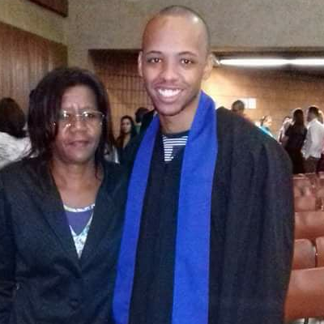

- Home
- >
- Currículo
Currículo
Dados Pessoais

Nome:
Jefferson de Oliveira Fernandes
Limeira, Brasileiro, Solteiro
28 anos
(19) 9-9264-1321, (19) 9-7131-6665.
Habilitação: A/B
Educação
Escola
Ataliba Pires do Amaral.
Curso
Ensino Médio Completo – 2007.
Escola
UNIP – Universidade Paulista.
Curso
Engenharia Mecânica – Incompleto 2011 a 2012.
Escola
COTIL Unicamp .
Curso
Técnico Informática (Cursando 2º Semestre).
Escola
Etec Trajano Camargo .
Curso
Técnico Mecânica.
Escola
SENAI “Luiz Varga” .
Curso
Ferramenteiro de Corte e Dobra.
Escola
SENAI “Luiz Varga” .
Curso
Mecânico de Usinagem.
Escola
Microcamp.
Curso
Montagem e Manutenção de Micros.
Experiência de Trabalho
2017 – Atualmente.
Projetista Jr. - Asolutech Comércio de Maquinas Equipamentos Ltda.
2015 - 2017.
Ferramenteiro / Desenhista Detalhista - OG Brasil Ferramentaria.
2014 - 2015.
Ferramenteiro / Fresador / Op. de C.N.C. - Promatech Ferramentaria e Projetos.
2010 - 2013.
Op. De Máquinas / Fresador Jr. - Stampline Metais Estampados Ltda .
2009 - 2010
Chapeiro / Repositor. - Rodosnack Topázio Lanchonete e Restaurante Ltda .
2005 - 2007
Mecânico de Manutenção (Menor Aprendiz SENAI). - Papirus Industria de Papel S/A.
↩ Voltar ao início